Topics
What is a Delivery Platform?
Building a Delivery Platform
This is a bit complicated
Let’s start by looking at how I stumbled into building one
Getting my toes wet
Company: Knowit Objectnet
Developers: 50+
Project: Public Sector Integration Bus
10 years ago I was a Java consultant at Knowit, one of my first jobs
Surprisingly not slow with bureaucracy++, hand holding
CI: Hudson, Monitoring: Nagios, early adopters Github Enterprise
CD: started slow, then Puppet + some ruby
A great first experience as a developer
What enabled this?
Mostly nerds who loved their job
A few key people drove this specific process
They had support from management
First off; I had no idea that this was weird in 2011, public sector
I assumed that periodic deployments was a thing of the past
They wanted to: learn, try new things, use best practices.
Strong tech culture, lot’s of knowledge sharing
Even the financial chief implemented a coding challenge in excel during seminar
Scaling up
Company: Finn.no
Developers: 150+
Project: Public and Private REST APIs
After working 3 years on Java, I wanted to learn more Scala
Finn had a really solid Scala team, where I learned so much
CI: Bamboo, CD: Puppet, Monitoring: Grafana + ELK
Lot’s of tools, and homemade deployment web UI. Nice
I got to create CI for Varnish
What enabled this?
Product pushed for innovation
Strong infra team and some eager Developers
They had support from management and product
Lot of the same culture as Knowit
Little fear of change
They wanted to: learn, try new things, use best practices.
Entering the big leagues
Company: Schibsted
Developers: 1500+
Project: Schibsteds Global CI/CD platform
We created a global platform for CI/CD
CI: Travis, CD: Spinnaker, Monitoring: DataDog + Sumologic
Many other teams were creating many useful tools
Managed k8s clusters, custom secret management etc
Inspired by Netflix, Google, Twitter etc.
Huge collaborative effort
Why were they doing this?
Strong infra organization, and eager teams
Companies could save money by sharing the cost
They had support from top level leadership
Schibsted = Many similar sites = similar needs
Exceptionally hungry culture, very senior engineers
They wanted to: learn, try new things, use best practices.
The common culture
Solid technical skill
Eager to learn and share
focus on best practices
Responsibility is shared, but driven by a few
Support from management and the organization
Everyone takes responsibility for adopting and using
A few eagerly improve the solution
Management sees the benefits and supports usage of time
The common benefits
Less distractions for developers
Shorter feedback loops
Easier to visualize current status
less distractions, faster development, happy developers
Short feedback loops -> less bugs, faster fixes
Insight -> Easier to argue for fixing tech debt
Let’s try to make a definition
We have a bunch of tools
But they are not a platform
We need to chain them, into reusable loops
What does this look like?
Development loop
Deployment loop
Monitoring loop
Development loop
Request for code change
Change code, build, test
Validate, static code analysis, security audit
If all good, upload, else change again
Deployment loop

Trigger could also be dependency changes
Integration tests or manual tests
Verify based on data or manual
Monitoring loop
A problem is reported by monitor: errors, vulnerabilities
Reported by metrics, logging, users or other tools
Alert and fix
The Delivery Automation System
So this is actually the DAS
Everything is chained together
All the steps are automated from src to prod
Basically what Knowit & Finn had
But what if you have other needs, different needs?
When Delivery Automation isn’t enough
For KnowIt and Finn this worked well
They had a pretty homogeneous tech stack
But what if you have teams doing completely different things?
You need to be able to customize this process
So let’s look at how it’s built
Building a loop
Step: a command
Task: input > [step1, step2, step3] > output
Pipeline: A Graph of tasks
Default pipeline = Delivery Automation System
Step: command to compile or test
Task: input: git_url, steps[compile, test, upload], output: artifact_url
Pipeline: Tasks; deploy and run integration tests.
Pipeline: Build, Deploy+test, Manual approval, Deploy+prod
This would be hidden in a Delivery Automation System
Opt-in
Opt-out
Easy to add features
Hard to add features
Compliance is extra work
Compliance is built in
Individual pipelines
Shared pipelines
Developers own the Pipeline
Traditional SaaS
Features could be support for new languages or tools
Customizing requires knowledge of underlying tool
The platform could be used as a Delivery Automation System by relying only on the Default Pipeline
.. a customizable set of services that can be composed through tasks into a pipeline that builds, verifies and deploys source code in a safe , predictable and repeatable manner with sane defaults .
That’s probably the longest introduction I’ve had to any presentation
But this talk doesn’t make sense if we don’t have the same definition
A nice graph
showing two teams deploying completely different tech stacks with completely different tools using the same platform stash -> team city -> helm -> k8s
github -> travis -> spinnaker -> aws
Where are you?
What is the current situation in the company?
What works, what doesn’t?
What is currently causing the most pain?
Where can we add the most value first?
Who can help with this?
Do you have backing to do this?
If lost, ask for help
Talk to a few people from everywhere
Developers, Operations, Managers, Maybe even customers?
What are their concerns, pain points?
Where do they feel that we are?
Do they all agree?
Designing the platform components
Understanding what makes the platform useful for them
Visualize areas where they could collaborate with other teams
Identify and help mitigate team2team issues
So am I a team coach now?
Yes, kind of..
If the teams are not cooperating you will be blocked by discussions and support.
If teams are collaborating, they will support each other.
Support and on boarding is by far the most expensive work
The problems are usually very similar, and simple to fix
The overhead of constantly context switching is huge
Use metrics to verify what you’ve learned
Start gathering metrics to visualize what you’ve learned from the interviews
Did the metrics confirm or deny?
In some cases a problem can be solved with training
In other cases you’ll find bombs that are about to go off
Sometimes just getting simple metrics is really hard, can we solve that?
Dashboards make it official
But be careful
I tend to use the Smashing framework early on, as it’s easy to hack
Show things that give value, but focus on what can be improved
This can help us argue the case for spending resources on tech debt for instance.
But if it is used to measure intangible things like people performance it is detrimental.
This problem warrants it’s own presentation
Suffice to say; What they see, they will measure you on.
The open approach
Just provide the pieces and let everyone compose their own pipelines
Freedom to choose all tools
Great for experienced DevOps teams
Less dependent on the Platform team
Huge cost in on-boarding for inexperienced teams
No centralized versioning or auditing
Most platform work is now shared, who will lead and negotiate?
The Golden Path
Provide a default path with batteries included
Teams are free to work on code, rather than config
Teams are still free to customize their tooling
If something breaks they’ll be more dependent on the Platform team
Security of having support
On-boarding new engineers is much easier
Pipeline
Secrets & environment variables
Hardened base images
Monitoring with metrics & logging
Pipeline; Build, Test, Audit, Deploy
Injection of automatically rotated secrets and appropriate env variables
Hardened, and up to date base images to build upon.
Monitoring and logging included by convention
Stray from the path at will, but you must get back on your own.
example.yml
version : 2 application_name : 'dogfood-service'
We require a tool version and a name for the app
Everything else is set by default.
But how can we extend this?
Maybe I want to disable SonarQube?
example.yml
… healthchecks : liveness : http : path : /_/custom_health_path ingress : - host : dogfood-service.ingress.local ports : - target_port : 5678 replicas : maximum : 10 minimum : 20 SonarQube : - enabled : false
This was actually a part of a k8s deloyment
So we can drop into k8s. Full power.
This is basically Fiaas, that we used at Finn.
For a k8s shop, this makes sense.
You might need a different way of doing this
Convention over configuration
Driving on an new road?
Eating in a new restaurant?
Talking to a new person?
What if you had to check a manual before:
Instead we rely on conventions
We know that driving on a road A is similar to road B.
Convention over configuration
Integrating tools
Figuring out what belongs where
Configuring custom pipelines
Setting up dashboards
It makes a world of difference when:
Naming conventions, between Github and NexusIQ
You can just follow the name
You know how we name things, so you have guidance
But don’t just blindly follow
Challenge the conventions, that’s how they evolve
They are a tool, to guide and help
Not limit or restrict
We have to define our success metrics
interviews gave us status quo
now where do we want to go?
Defining success (and failure)
Desired state
Incremental small goals
Monitor red flags
A Delivery Platform is a constant work in progress
No end goal, but define a moving ‘desired state’
If it stops changing it’s not done, it’s dying
Small incremental goals, gives motivation and progress
Look at adoption, teams metrics, comparison to ‘desired state’
And watch for red flags
Monitor red flags
Teams disabling features
Lack of team metrics improvement
many teams start disabling a certain feature, why? Is it not working/helping?
teams have no improvement on metrics, are they not using the tooling?
These are signs that you are not helping them
So, we have defined our success, how do we start getting forward?
Start with the low hanging fruits
Usually this means smaller teams, with less legacy
Usually they have less automation, maybe never even deployed
Often happy to get help, stretched for resources
Here I am wearing myself out to get a bunch of sour grapes that are not worth gaping for.
- Aesop’s Fables
The story goes, that the fox eyed the biggest grapes hanging the highest vine.
When he could not reach them he belittled the grapes, as sour / not worth his time
This is a classic mistake of over reaching, and it’s easy to do.
As on-boarding high profile teams gives the platform publicity and validation
But the stakes are high, and they don’t have time to spend on buggy platforms
Ask for volunteers
Or prepare for a challenge!
In the early phases of creating the first proper platform
We were instructed to on-board certain teams
This sometimes worked, but also failed hard at times
They didn’t really need our tooling.
We got stressed as we saw this would fail
Gave the impression that we could give them orders.
This also exacerbates cognitive biases
Status quo bias
The current baseline (or status quo) is taken as a reference point, and any change from that baseline is perceived as a loss
And in our case that often made sense
If our offering was not much better than what they already had, this was a loss.
Especially considering the work needed to migrate
Big reason for low hanging fruit
Loss aversion
We prefer avoiding losses to acquiring equivalent gains.
surprisingly, teams in dire need of migrating from unmaintained/buggy solutions, were also reluctant
They agreed that the situation was bad, but were never satisfied with our offering even though it was much better.
They had invested a lot of time, in small nifty features.
These things didn’t seem important as they were minor things.
But our brains don’t work like that, we failed to pay attention, and they did not want to loose their useful features.
IKEA effect
We tend to place a disproportionately high value on products we’ve partially created.
keeping the previous team in mind
they had created this tooling themselves
the IKEA effect probably also contributed to their unwillingness to on-board
Sales people use this argument all the time
‘I drive this car my self.’ Suddenly we trust their review more
But there is some truth to this
Using the tools we make, is a great way to test, and improve them.
Early warning system
Be aware though
You have insight into the tools in a way a user never will.
You know the code, the integrations
You know where to report bugs, how to fix configuration
Support
We’ve started to on board teams and everything was going great! But suddenly they started asking questions, finding bugs and stealing all our time!
- Some Platform Engineer probably
How do users report problems?
How do these reports find the responsible person/team?
Who follows up on reports that span several teams?
Is this users responsibility?
First iteration at Schibsted
One Delivery team of 4 people
Artifactory, Travis, Spinnaker
We helped people on Slack
We were extremely available
This worked great, we got lots of valuable feedback
Fast iterations, detailed bug reports, quick fixes
The user felt safe, because we were right there with them
But it doesn’t scale
A few months later, we were completely exhausted by constant interruptions
Repeated questions
Features and support both suffered a lot
Some users were getting really frustrated, as their tickets weren’t handled
We, were getting frustrated as we were getting nowhere
So what changed?
50 users increased to 500
General population instead of just the most interested
We were no longer picking only low hanging fruits
And this is all perfectly natural
To our rescue, comes a white knight
We had recently gotten a dedicated manager
He helped us re-think our support setup
The Unified Support
One entrypointSlack only for dedicated support, and incidents
One call handles support routing
Letting users have one place to report bugs, for all services
At this time there were other teams handling some services. But users only see the front end.
Slack support channels became community channels
In these channels user started taking on support
Full speed ahead
The pit stop was an analogy we used a lot
We were the pit stop crew
Users knew where to stop
We know who should do what
Quick fix, quick win
Questions?
Feel free to share your experiences, ask questions or disagree with me on Twitter: @brujoand